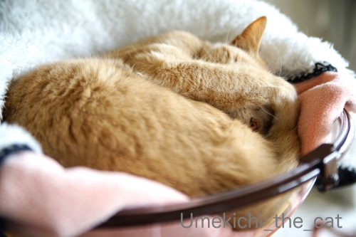
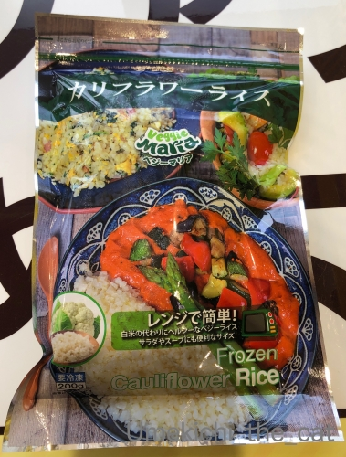
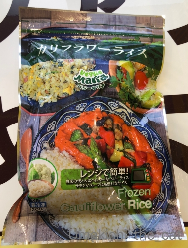

猫関所の水際？対策 [梅吉]

隠す様にしながら実はお鼻をちらりと見せていたり

隠れる様にしながら実はじっと下僕を見ていたり( ´艸｀)
のんびり過ごしている様に見える梅吉さんですがやる時はやる！
（22秒 音は出ません＾＾）
我が家の水際対策はバッチリです (≧▽≦)
＊＊＊＊＊＊＊＊＊＊＊＊＊＊＊＊＊＊＊＊＊＊＊＊＊＊＊＊＊＊＊＊＊＊＊＊＊＊＊＊
糖質制限しているわけでは無いのですが興味があって食べてみた。
「カリフラワーライス」

カリフラワーの房の部分を細かく切ってご飯に見立てた冷凍食品。
味はそのものはズバリ、カリフラワーですw
カレーのご飯に代用したのですが違和感なく食べられました＾＾
炭水化物過多だよねと思った時の罪悪感軽減にいかがでしょう。
 ↑ガブッと一押し↑
↑ガブッと一押し↑
隠す様にしながら実はお鼻をちらりと見せていたり
隠れる様にしながら実はじっと下僕を見ていたり( ´艸｀)
のんびり過ごしている様に見える梅吉さんですがやる時はやる！
（22秒 音は出ません＾＾）
我が家の水際対策はバッチリです (≧▽≦)
＊＊＊＊＊＊＊＊＊＊＊＊＊＊＊＊＊＊＊＊＊＊＊＊＊＊＊＊＊＊＊＊＊＊＊＊＊＊＊＊
糖質制限しているわけでは無いのですが興味があって食べてみた。
「カリフラワーライス」

カリフラワーの房の部分を細かく切ってご飯に見立てた冷凍食品。
味はそのものはズバリ、カリフラワーですw
カレーのご飯に代用したのですが違和感なく食べられました＾＾
炭水化物過多だよねと思った時の罪悪感軽減にいかがでしょう。

カフェオレ色の梅吉

梅吉 2023年8月10日 永眠


梅吉と出会った譲渡会

犬猫の理由なき殺処分ゼロ
妄想広告
UMEKICHI 光

爆発的に早い！
時々攻撃的！
Thanks to Mr.Boss365
爆発的に早い！
時々攻撃的！
Thanks to Mr.Boss365

ちぃおっと様何度も歩いて協力してくれるんですね~。梅吉さんよりそっちに笑っちゃいました。優しいのね。
by zombiekong (2020-03-19 00:21)
梅吉さん、水際対策ご苦労様（ﾟ□ﾟ）
カリフラワーライスは、一応知ってますがやっぱ炭水化物を食べないと腹持ちが悪い？
by 英ちゃん (2020-03-19 01:14)
梅吉さんへの挨拶なしにここ通れないですね(≧◇≦)
通行料はやはりチュールでしょうか。
カリフラワーライスはテレビで見ましたが、
冷凍食品もあるとは知りませんでした。
単体よりカレーとか一緒に食べるのいいですね(^^♪
by yamatonosuke (2020-03-19 01:54)
梅吉さんジャンプ！ナイスセキュリティ万全ですね。
by ニコニコファイト (2020-03-19 06:59)
さすが梅吉さん、完璧な警備ですね（≧∇≦）
梅吉さんの目を盗んで通ることは無理！
カリフラワーライス、味はカリフラワーそのものなんですねw
カレーとか味が濃いものに合わせると美味しそう( ^ω^ )
by ニッキー (2020-03-19 07:15)
こんにちは！
お目目だけ出して・・
自分は見えていないつもりなんでしょうか？
by Take-Zee (2020-03-19 08:24)
こうしてみると、なかなかの伸びっぷりですねー笑
私も関所でチェックされてみたいです。
カリフラワーライス、我が家にもあります。
炒飯風？に炒めものに加えてかさまししてます。
が、常食にはできないかなあ？？確かに罪悪感を減らす効果はありそうです。
by liang (2020-03-19 08:37)
梅吉さんの関所！
チェックが厳しいですねぇ～(#^.^#)
でも用もないのに
ここをフラフラと通ってしまいそうです♪
by きぃ (2020-03-19 08:40)
ほんの少し映っているちぃさんをガン見しましたｗｗ
撮影お疲れ様です！^^
ゴハンのかわりにカリフラワーを加えて増す！ってのを
誰かのブログで見て、一度だけカリフラワーを買ってチャレンジしたのですが、調理が面倒くさくて１回で終わったｗｗ
こういう便利なモノがあるのね！
わたしいつも炭水化物多すぎて（ラーメンとかラーメンとかラーメンとか）反省してるので、買ってみようｗ
by リュカ (2020-03-19 09:01)
おお、見事な検問！
これは無視しては通行できませんなぁ～(^_^;)
カリフラワーライスなんてもの、まったく知りませんでした！
by よーちゃん (2020-03-19 09:47)
クリアボール、まだ毛布必須なのですね。このまま夏になったら普通に入るかしら。
梅吉さんの検問、完璧ですね！
姿勢を低くして隠れておいてのタックル。スバラシイ！
え？ちぃさんがほんの少し映ってるって？あ、ほんとだ、ほんとだ。
お顔まではわからないけどー。
へぇ、カリフラワーライスですかー。知らなかったー。
ブロッコリーは好きだけど、カリフラワーは滅多に食べないなぁ。
ブロッコリーは茎の方が栄養が高いっていうけど、カリフラワーはどうなんだろう。
by ChatBleu (2020-03-19 09:59)
梅吉さんのチェックは厳しいのですね！
通る者をチェックですね(^^)
by ma2ma2 (2020-03-19 10:18)
行きも帰りも許すまじｗ
梅吉さん渾身の水際対策あっぱれっでございます。
小さく鏡に映りこむちぃさんの姿を確認してしまいましたとさ（^^
カリフラワーライス、先日私もスーパーの冷食コーナーで手に取りました。
悩んだ末に買わなかったのですが・・・
カレーならイケそうですね。 チャーハンとかできそうですか？
炭水化物とり過ぎは気を付けたいけど
明太子＆炊きたてホカホカご飯の誘惑には3連敗中ｗ
by marimo (2020-03-19 10:24)
こんにちは。
梅吉くん、猫関所で素早いチェックしてますね（笑）楽しそう
捕まえる感じではなく？押し出そうとしてます。
また、ご主人さん、素晴らしい通行人を演じてますね（笑）
日本政府も導入すれば検査数？が増えそうな猫関所です。
「カリフラワーライス」輸入商品みたいですね。
チャーハンはお米主体なので代替えに良さそうです。
炭水化物過多、気を付けたい年代です（笑）！？(=^･ｪ･^=)
by Boss365 (2020-03-19 11:33)
何度も行ったり来たりするおっとさんが可愛すぎ～♪
決して通りがかりの者・・ではありませんね(≧▽≦)
梅吉さんも箱の中へ毎回戻ってスタンバイ、律儀だにゃ～^^
カリカリを差し出したらすんなり通してくれるのかしらん？！
おっとさんのお家にいる時間が長いと楽しい動画が増えそうですね！
チラ見せは猫変態を悶絶させること、お猫さまは絶対わかってる。
そしてわかっていても毎回悶絶してカメラを構えてしまう・・・。
炭水化物星人の私。
炊き立てごはんの誘惑にはどうしても勝てず食べすぎちゃいます。
カリフラワーライスはそんな罪悪感に苛まれた時の助け舟になりそうですね(#^^#)
by ゆきち (2020-03-19 12:18)
梅吉さん、旦那様のテレワークでも安心出来ず、チェックが欠かせないのでしょうか(^_^;)
いつもながら、楽しませていただき感謝ですね(^_^)
by kou (2020-03-19 13:10)
いつもご訪問＆コメントありがとうございます(^^♪
梅吉たっくる
成功率１００％ですね (*^-^*)/
ジャパン代表候補になりますよー。
そういえばサンウルブズ戦、海外開催になっちゃいましたか？
by ぱだおくん (2020-03-19 17:54)
とはいえ カリフラワーが米の代わりはちょっとキツイかなぁ
炭水化物しか食べてないので 反省はしてるんですけどねぇ
by (。・_・。)２ｋ (2020-03-19 17:57)
罪悪感は0になりそうだけど、カリフラワーが大嫌い
なので厳しいかも。少しでも罪悪感を減らすために
十六穀米にして炊いています。
by mio (2020-03-19 21:36)
入鉄砲と出女チェック？、お疲れさまです。
そんなに何度も関所を通ると確かに怪しいですよねー。^^;
カリフラワーライス、知りませんでした。
ちょっと食べてみたいです。^^)
by yes_hama (2020-03-19 22:17)
梅吉君、らいむの言葉を訳してくれてありがとう
らいむにはちゃんとおやつをあげましたよ～
梅吉君、頼りになりますね
勇ましくてカッコいい！
アドバイスありがとうございます
それこそ水道から水が出ているところも見た事がないコなので
ちょっとずつ慣らせようと思います
by 藤並 香衣 (2020-03-19 23:16)
こんにちは。
別件ですが、小生も梅吉君が「ちゃとら」とは思わないのですが・・・
縞模様は少ない感じですが、分類すると「ちゃとら系」かな？
自粛要請？お気を付けて「コシノヒガン」の花見にお出掛け下さい！？(=^･ｪ･^=)
by Boss365 (2020-03-20 16:44)
おぉ、関所の番にゃん(^.^)
水際対策バッチリみたいだけど〜 これが不審者だと、どんなお仕置きが?!
･･･カリフラワーライスって、米粒サイズだけど、ライスではないよね(@@;)
by のらん (2020-03-21 11:39)
梅吉さん、鋭い片目で見逃さない！
関所は万全ですね～^^
行ったり来たりのちぃおっと様が素敵～^^
カリフラワーライス、なるほどね～夜遅くなったときとか、いいかも！^^
by sana (2020-03-21 14:37)
ちら見せ名人っ(笑)
かわいくてたまりませんね(≧∇≦)
関所！！通行手形がないとガブられますね(･∀･；)
襲われ待ちのようなダンナさまがステキっwww
何気にそれを撮影しているちぃさんがちらっと写って
いらっしゃったりといい動画でした☆⌒d(*＾ｰﾟ)b
カリフラワーといえば、酔っぱらった人がメロンパン
と思って買って、覚醒した朝見たらカリフラワーだった
という話に爆笑したことを思い出しました(((*≧艸≦)ﾌﾟﾌﾟｯ
by カトリーヌ (2020-03-21 18:00)
通りがかりに様子をうかがってからの
ガシッがいいですね～。
カリフラワーライス、カレーだったらありかな。
味はともかく、もちっとしてたりも…ないですよね、きっと。
by ふにゃいの (2020-03-21 18:01)